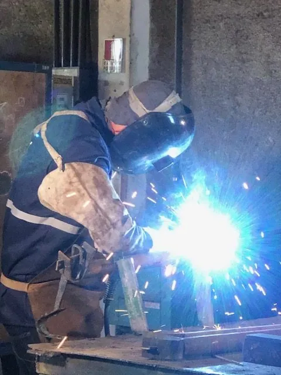

Decisão
Alugar ou comprar andaime: quando cada opção compensa
A decisão depende de duas variáveis: com que frequência a empresa precisa de acesso e por quanto tempo o material fica parado em cada obra. Quem usa andaime de forma pontual, em obra com começo e fim, aluga. Quem usa acesso o ano inteiro, com equipes próprias e demanda contínua, chega a um ponto em que o aluguel acumulado passa a não fazer sentido.
O que costuma faltar nessa conta é o custo de ter material próprio depois da compra: guarda, transporte, inspeção, manutenção, reposição de peça perdida e responsabilidade técnica. Comprar troca uma despesa recorrente por um ativo que precisa ser administrado.

Quando alugar compensa
- Obra pontual, com prazo definido e sem repetição prevista.
- Pico de demanda acima da capacidade do material próprio, como parada de manutenção.
- Necessidade de sistema diferente do que a empresa tem, para uma geometria específica.
- Obra distante da base da empresa, em que transportar material próprio não compensa.
- Situação em que a empresa não quer assumir guarda, inspeção e manutenção do material.
A locação também resolve o problema de volume variável. Frente que cresce durante a obra pede material adicional, e ampliar um contrato é mais simples que comprar peça no meio do serviço.
Quando comprar compensa
- Uso contínuo ao longo do ano, com frentes de serviço se sucedendo sem intervalo.
- Material que fica montado por muitos meses seguidos, em que o aluguel acumula sem interrupção.
- Empresa com equipe própria capacitada e estrutura para guardar, inspecionar e manter o material.
- Necessidade de disponibilidade imediata, sem depender da agenda de terceiros.
- Padronização: manter o mesmo sistema em todas as obras simplifica montagem e treinamento.
Indústria com manutenção própria costuma estar nesse grupo. O acesso é necessidade permanente, e ter um núcleo de material próprio evita mobilização a cada serviço pequeno.
O que muda entre alugar e comprar
| Item | Locação | Compra |
|---|---|---|
| Desembolso | Recorrente, enquanto o material estiver na obra | Concentrado na aquisição |
| Disponibilidade | Depende da agenda e do estoque do fornecedor | Imediata, dentro do que a empresa possui |
| Guarda e pátio | Do fornecedor | Da empresa, com área e organização próprias |
| Inspeção e manutenção | Do fornecedor, entre uma locação e outra | Da empresa, de forma contínua |
| Reposição de peça | Reposta pelo fornecedor, com cobrança de perda quando houver | Comprada pela empresa, quando faltar |
| Transporte | Por contrato, ida e volta | De cada obra para a próxima, por conta da empresa |
| Volume variável | Fácil de ampliar | Limitado ao que foi comprado |
| Sistema diferente | Escolhido por obra | Fixo, conforme a aquisição |
O custo que aparece depois da compra
Material próprio precisa de pátio coberto ou pelo menos organizado, com separação por tipo de peça. Peça empilhada em qualquer lugar amassa, empena e corrói, e peça danificada não sobe.
Precisa também de rotina de inspeção e de descarte. Alguém tem que decidir o que volta ao estoque, o que é recuperado e o que sai de circulação. Sem esse controle, o estoque envelhece por dentro e a obra descobre isso no dia da montagem.
Some a isso a perda natural entre obras. Peça pequena some, e o inventário que não é conferido no retorno vira falta na obra seguinte.
O modelo misto, que resolve a maioria dos casos
A configuração mais comum em empresa com demanda constante é comprar um núcleo de material, dimensionado pela necessidade de rotina, e alugar o excedente nos picos. O núcleo cobre manutenção diária e serviço pequeno, e a locação cobre parada, obra grande e geometria fora do padrão.
Esse arranjo evita os dois extremos: comprar demais e ficar com material parado, ou alugar tudo e pagar recorrência por uso que nunca cessa.
Quando a compra entra, a fabricação própria faz diferença na reposição. Peça de reposição fabricada pelo mesmo fornecedor mantém a compatibilidade do sistema, o que não acontece quando o estoque vira mistura de peças de origens diferentes.
O que perguntar antes de comprar
Compra de andaime é compra de ativo, e ativo se avalia pelo que vem depois da entrega. Antes de fechar, vale perguntar:
- Quem fabrica a peça, e se a reposição sai do mesmo fornecedor no futuro.
- Qual o material e o tratamento de superfície, e como ele se comporta em ambiente agressivo ou litorâneo.
- Qual a carga admissível do sistema e qual documentação acompanha a venda.
- Se existe peça sob medida para o caso da empresa, ou se o arranjo terá que se adaptar ao catálogo.
- Como é a compatibilidade com o material que a empresa já possui, quando houver.
- Quais componentes têm desgaste mais rápido e precisam de reposição frequente.
- Se o fornecedor também aluga, para cobrir os picos sem trocar de sistema.
A última pergunta costuma ser a mais útil. Comprar de um fornecedor que também tem material em locação permite ampliar o volume no pico mantendo a mesma peça, e isso evita ter dois sistemas incompatíveis no mesmo pátio.
[[PENDENTE: condições comerciais, garantia e prazo de fornecimento na venda de andaime]]
Como fazer a conta na sua empresa
- Levante quantos meses por ano a empresa teve andaime montado em alguma frente.
- Separe o volume que é constante do volume que é de pico.
- Liste o que hoje é pago em locação por esse volume constante.
- Estime o custo de guarda, inspeção, manutenção, transporte interno e reposição do material próprio.
- Verifique se a empresa tem equipe capacitada em NR 18 e NR 35 para montar sem contratar mão de obra.
- Considere a padronização do sistema, que reduz tempo de montagem e de treinamento.
Se o volume constante for pequeno, alugar continua sendo a resposta. Se ele for relevante e permanente, comprar o núcleo tende a se pagar, e o excedente segue em locação.
Normas citadas neste artigo
- NR 18, Segurança e Saúde no Trabalho na Indústria da Construção
Este texto é orientativo e não substitui o texto oficial das normas nem o procedimento da obra. Em caso de divergência, prevalece a redação vigente da norma.
Autoria e revisão
Publicado por Tec Lit Serviços, empresa de locação, venda, fabricação e montagem de andaime em Aracruz, ES, no mercado desde 1992.
Revisão técnica: [[PENDENTE: nome, função e registro do responsável técnico que revisa os artigos]]
Continue